JsRpc和yakit热加载实现签名破解
免责声明
文章中涉及的内容可能带有攻击性，仅供安全研究与教学之用，读者将其信息做其他用途，由用户承担全部法律及连带责任，文章作者不承担任何法律及连带责任。
前言
最近在做一个项目的渗透，发现是存在签名的，由于存在这个签名，我们无法篡改数据包的内容，也不能重放数据包进行请求，难以进行渗透测试。于是乎花了一个小时把签名函数找到之后使用JsRpc进行远程调用，最后通过yakit的热加载即可进行动态生成签名，就可以随意篡改数据包内容和重放数据包了。
什么是JSRPC？
JSRPC（JavaScript Remote Procedure Call）是一种基于 WebSocket/WSS 协议的远程过程调用技术，允许外部程序直接调用网页中的JavaScript函数，而无需逆向其具体实现逻辑。
在渗透测试和安全评估中，前端JavaScript代码通常包含 敏感接口、加密参数（如sign、**_signature**）、数据加解密逻辑 等。传统方法需要逆向分析加密算法，而JSRPC可以直接调用目标加密函数，极大提升测试效率。
为什么需要JSRPC？
现代Web应用普遍采用：
- 参数签名（如
sign/token生成） - 反爬虫混淆（WebAssembly/代码混淆）
- 动态加密（AES密钥随时间变化）
传统逆向需要：
- 反混淆数万行JS代码
- 定位关键函数
- 重写加密逻辑（Python/Node.js复现）
传统逆向分析的痛点
- 复杂加密逻辑：如AES、RSA、自定义混淆算法，逆向耗时。
- 环境依赖：部分JS加密依赖浏览器环境（如
window、document），补环境困难。 - 频繁更新：前端加密逻辑可能动态变化，逆向方法可能失效。
JSRPC的优势
✅ 直接调用加密函数：无需关心内部实现，传入参数即可获取加密结果。
✅ 适用于动态加密：即使加密逻辑变化，只要函数名不变，仍可调用。
✅ 减少逆向工作量：特别适合sign、密码加密、数据解密等场景。
JSRPC核心原理
JSRPC基于 WebSocket（ws://）或 WebSocket Secure（wss://）协议，采用 客户端-服务端 架构：
| 组件 | 作用 |
|---|---|
| 服务端 | 接收加密请求，返回加密结果 |
| 客户端 | 注入目标网页，暴露加密函数供服务端调用 |
| 通信协议 | WebSocket（长连接，支持双向通信） |
工作流程：
- 注入JS客户端：将WebSocket客户端代码注入目标网页。
- 暴露加密函数：将目标加密函数绑定到
window对象，供远程调用。 - 服务端调用：外部程序通过WebSocket发送参数，客户端执行加密并返回结果。
1 | flowchart TB |
实战破解签名
当我在前端输入了手机号和验证码后进行登录请求，抓包后发现数据包中有一个si字段。当我进行第三次重放数据包请求的时候发现报错了。
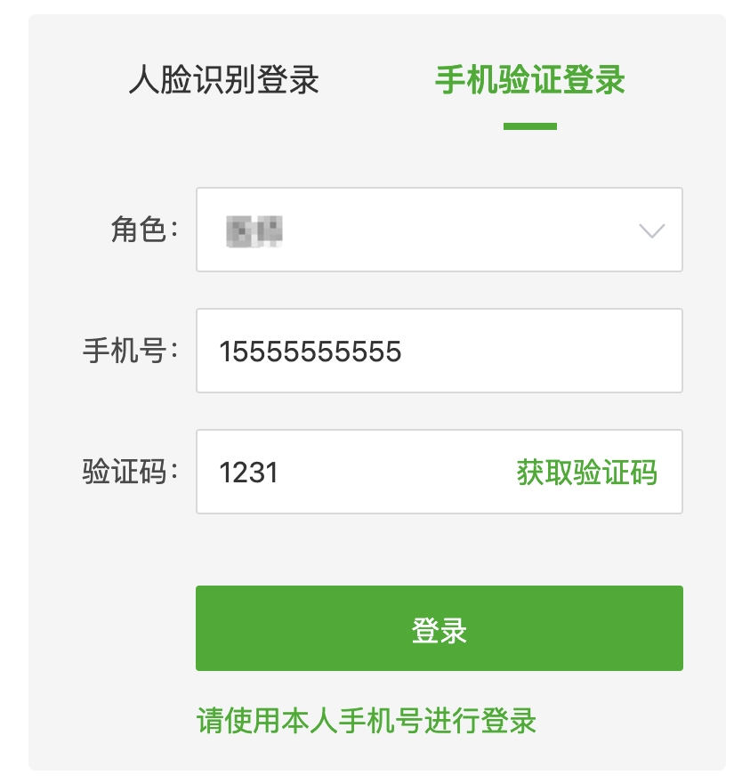
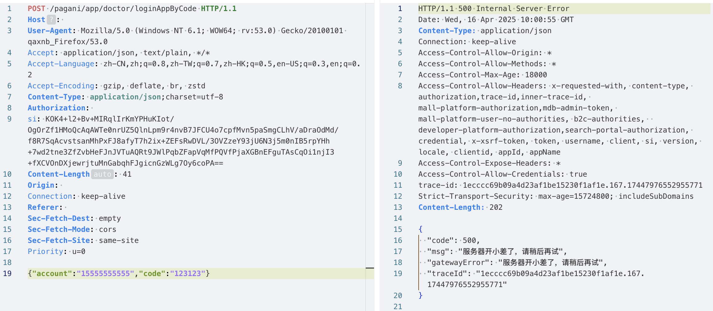
喵一眼就知道大概和header的si字段有关，于是我把headeer的si删除之后，再次发起请求后发现还是一样的报错，说明存在签名校验。存在签名校验的话，我就无法进行重放攻击去进行一些漏洞测试，比如越权漏洞、爆破漏洞等。
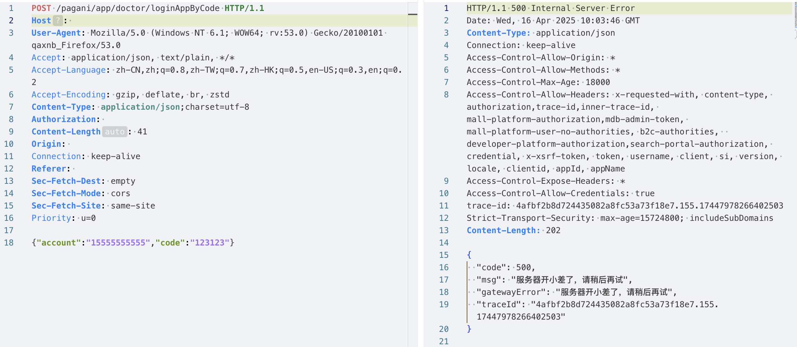
于是开始从前端中寻找签名的方法，首先是进行一次请求，然后查看网络请求，查看我们的启动器。
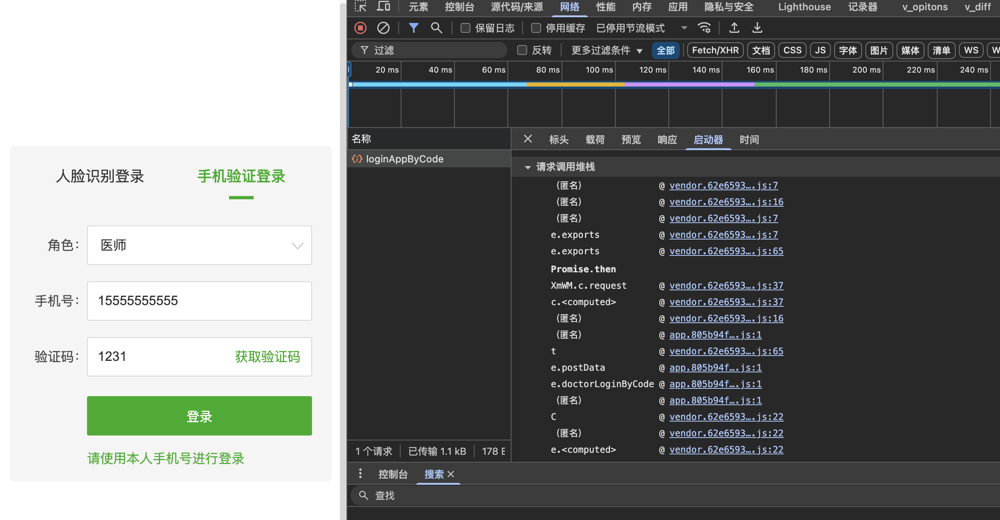
注意⚠️：启动器的内容是从下往上调用的，也就是说最下面的代码是最先执行的。我首先分析e.doctorLoginByCode启动器的代码进行调试。观察作用域的内容发现，此时签名还没生成，于是进行往上看
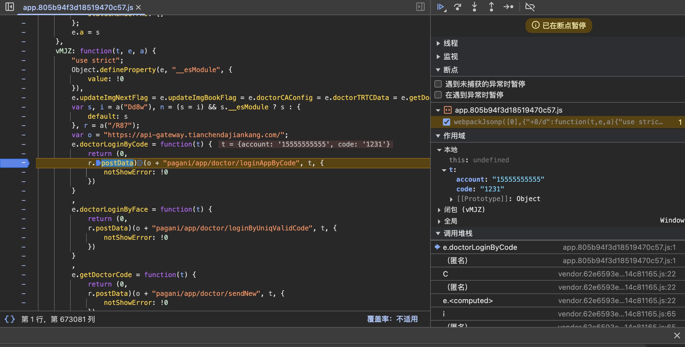
经过一条条debug分析后发现，在介于下面的这两个启动器之间生成的签名。
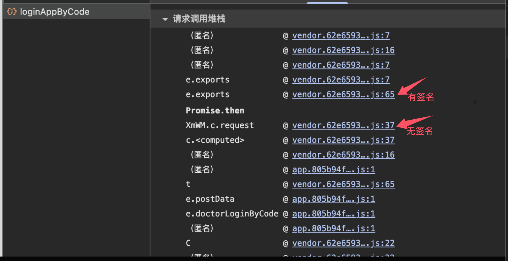
于是分别对这两个启动器下断点进行每一步调试
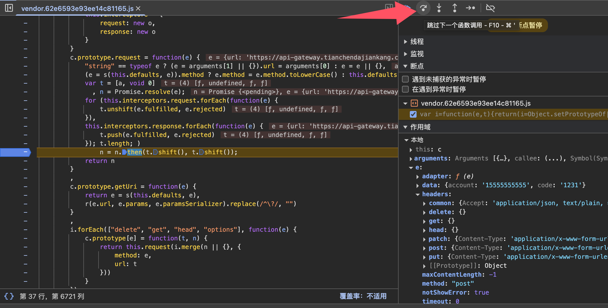
直到调试定位到了一个bs的函数调用，因为进过执行这个函数之后在作用域就能看到了签名。这段代码的大致意思也是处理一些数据然后设置给请求头（也就是si）
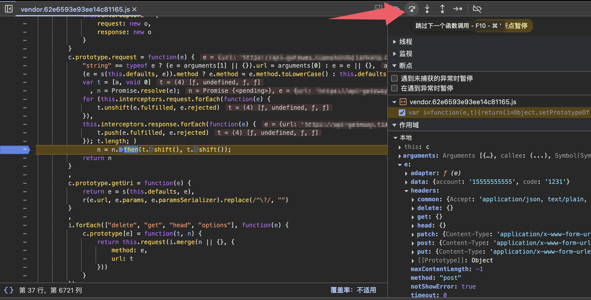
我们F111跟进去这个函数看看具体的函数内容，确认这段混淆后的代码正是进行加密的函数，具体的函数内容我们可以不用深入研究，只需要看我们需要传入什么数据即可。我们看到bsh函数中需要传入的内容
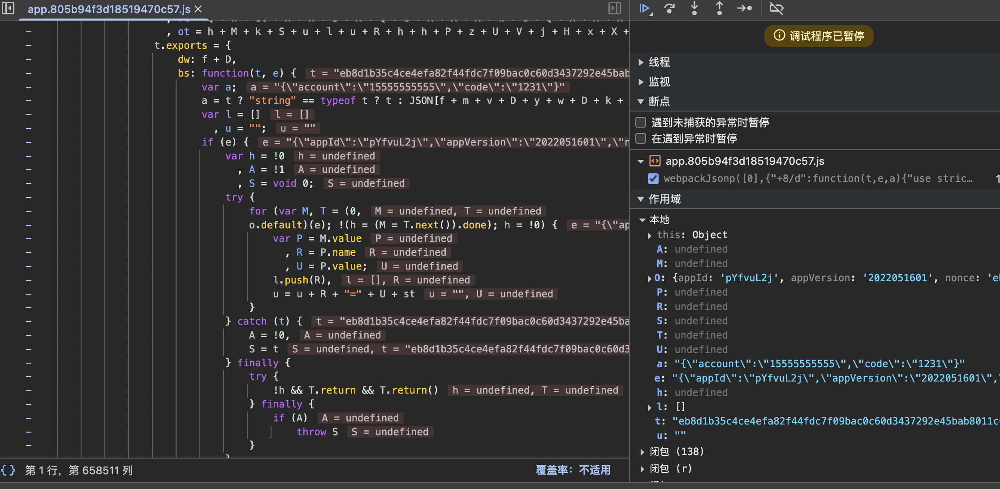
分析发现我们需要传入的内容正是我们进行请求时的body的内容，如果没有内容则传入一个空对象，避免函数报错。
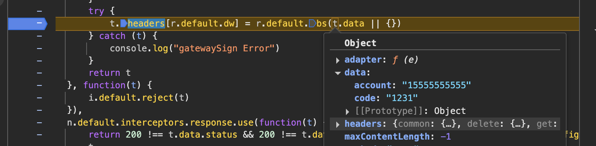
既然签名函数被找到了，那么我们就进行简单的测试调用。我们需要修改一下原本的代码，插入一些代码方便我们调试。
右键选择“替换内容”，然后在顶部“选择文件夹”处选择存放我们修改后的代码的位置。
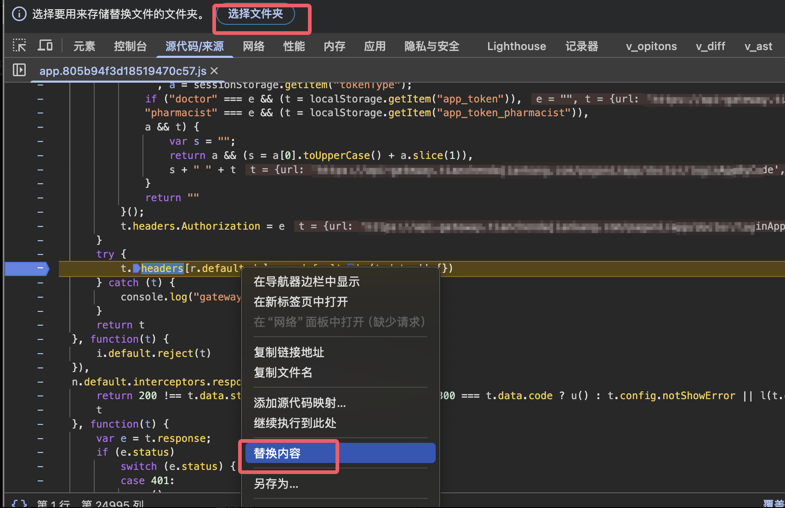
插入一段代码尝试进行调用这个加密函数进行加密内容，然后打印到控制台。
1 | console.log("加密开始！"); |
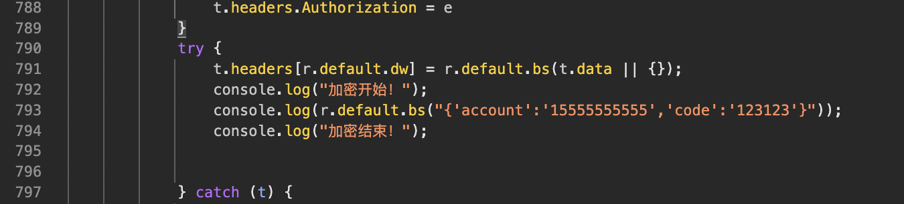
进行一次请求之后发现，成功在控制台输出了我们加密的内容。
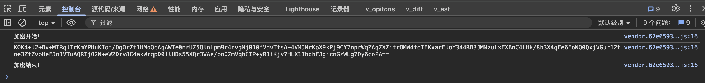
把加密生成的签名放到我们的请求包尝试请求，请求成功。
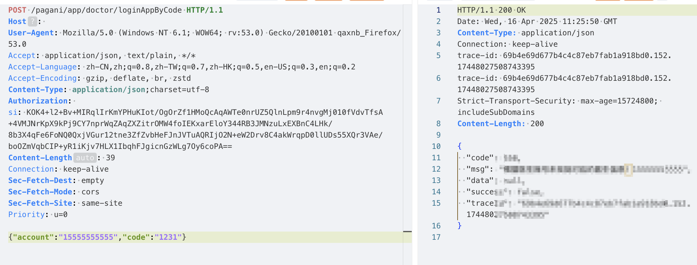
既然签名函数可以调用了，那么就到我们这次的主角JsRpc登场了。
工具下载地址：
1 | https://github.com/jxhczhl/JsRpc/releases |
工具的具体使用就不多说了，github官方有使用的示例。
1 | https://github.com/jxhczhl/JsRpc |
api 简介
/list:查看当前连接的ws服务 (get)/ws:浏览器注入ws连接的接口 (ws | wss)/wst:ws测试使用-发啥回啥 (ws | wss)/go:获取数据的接口 (get | post)/execjs:传递jscode给浏览器执行 (get | post)/page/cookie:直接获取当前页面的cookie (get)/page/html:获取当前页面的html (get)
首先我们先执行工具，直接在终端执行即可，window的话，可以直接双击exe文件执行，这个是go写的工具，作者已经编译好了多个平台的可执行文件。

resouces文件夹中有一个JsEnv_Dev.js文件，可用于构建通信环境。
打开JsEnv 复制粘贴到网站控制台(注意：可以在浏览器开启的时候就先注入环境，不要在调试断点时候注入！！！)
1 | https://github.com/jxhczhl/JsRpc/tree/main/resouces |
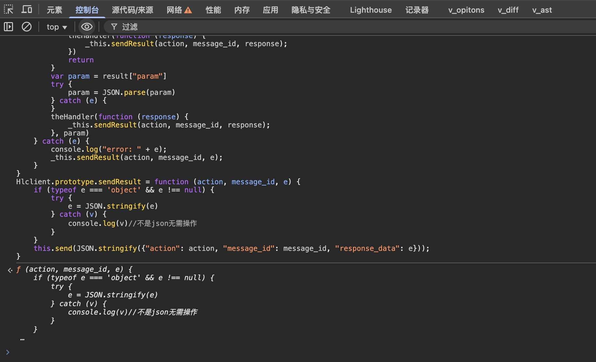
然后连接通信这里的group自定义，我这里就随便写了mt，注册的方法是si，也可以随意写。param是进行传参，也可以随便写和下面对应就行。r.default.bs就是我们找到的签名函数。
- group ：自定义，我这里就随便写了mt
- si ：注册的方法是si，也可以随意写
- resolve：一个回调函数，用于向服务端返回处理结果，默认
- param ：param是进行传参，也可以随便写和下面的对应就行
- r.default.bs :是我们找到的签名函数
1 | var demo = new Hlclient("ws://127.0.0.1:12080/ws?group=mt"); |
进行一次请求后控制台会打印连接成功，同时我们的服务端也看到了新上线的客户端。
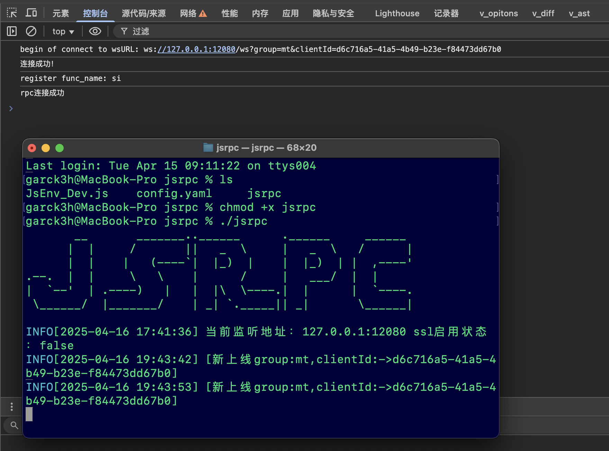
下面通过go接口尝试传入参数进行签名，成功拿到签名结果。
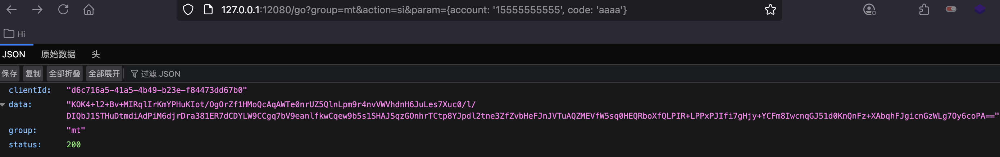
通过Mitmproxy可实时修改请求和响应内容，但我这次不用这个进行调用，这里使用yakit的热加载功能。
编写热加载代码，我们通过获取请求数据包的body内容进行签名之后，然后重新设置给请求头的si字段即可。具体代码如下：
1 | jsrpcReq = func(origin /*string*/) { |
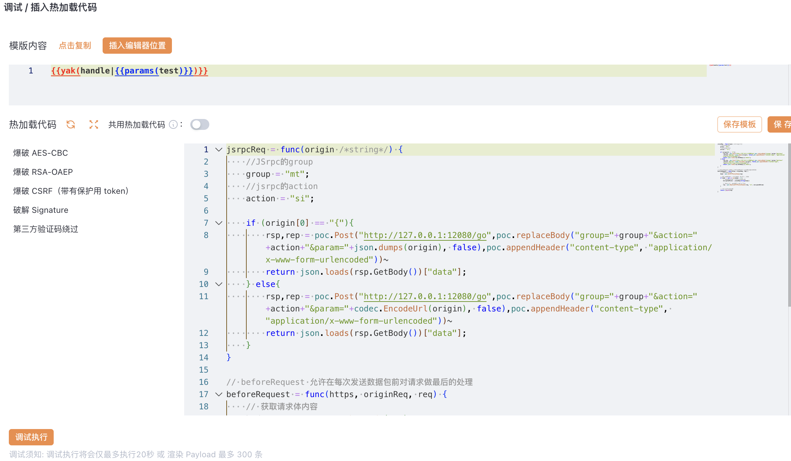
尝试调用热加载的代码进行请求，请求成功。
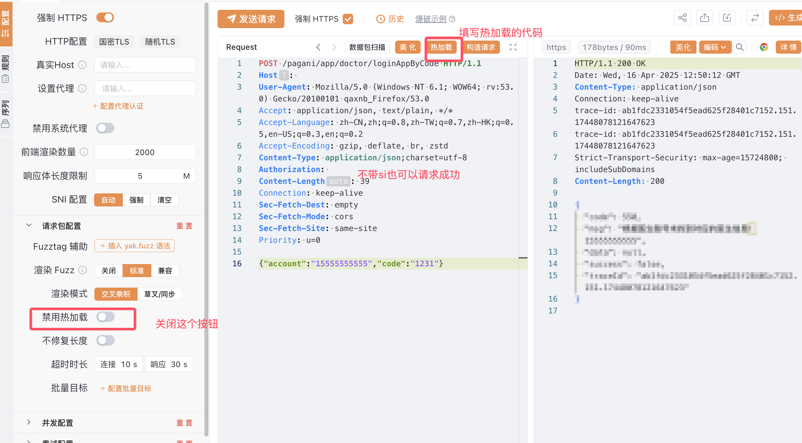
同时我们的数据包重放以及爆破功能也是可以用了
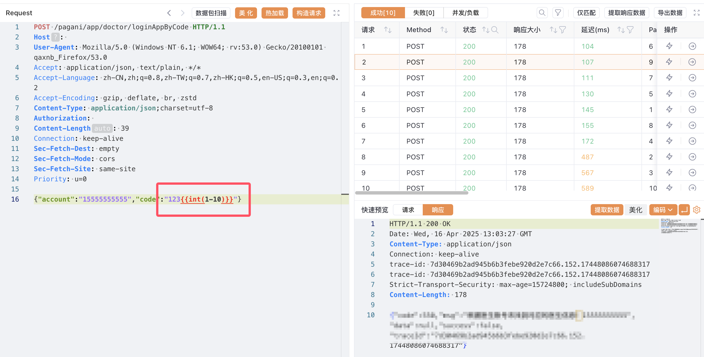
总结
- 在Web逆向工程（尤其是破解签名算法）的过程中，最耗时的环节往往是调试和定位关键签名函数，而非后期的代码复现或调用逻辑实现
- 至于JsRpc工具，多用几次就熟悉了，熟悉后也可以使用sekiro
- 调试的时候直接通过浏览器开发者工具的 Network面板 和 调用栈回溯 快速定位签名触发点，比反混淆代码效率更高。使用 XHR/Fetch断点 或全局 Hook拦截 可大幅减少搜索范围